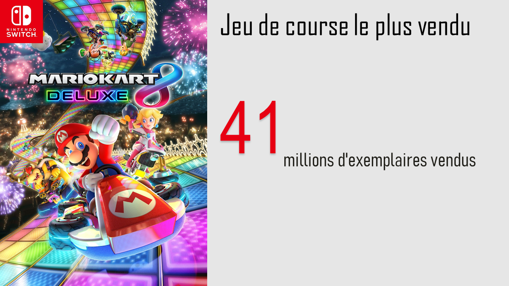

Voici un top 5 des jeux vidéo les plus vendus classés par genre. Du jeu de course, au survival horreur, puis le jeu d'action et celui de simulation de vie et enfin de construction.


La première console de jeux vidéo répertoriée est l'Odyssey de Magnavox, apparue sur le marché en 1972. Créée par Ralph Baer, elle permet de jouer à plusieurs jeux grâce à un système de calques à apposer sur l'écran du téléviseur. C'est le début de la première génération de consoles qui se termine avec Pong trois ans plus tard.
La deuxième génération commence avec la Fairchild Channel F en 1976. Le joueur achète dorénavant les jeux qui l’intéressent. Une console ayant un grand succès (dès 1981 en France) est l'Atari 2600.
Le Krach du jeu vidéo de 1983 survient à cause de plusieurs facteurs, notamment la prolifération de jeux de basse qualité, ainsi que la concurrence des ordinateurs personnels.
L'industrie du jeu vidéo ne redémarre vraiment qu'en 1985, avec la troisième génération et plus particulièrement le succès de la NES avec des jeux comme Super Mario Bros., The Legend of Zelda et Castlevania. La PC-Engine et la Master System arrivent sur le marché mais le succès de la PC-Engine se cantonne au Japon, celui de la Master System en Europe et au Brésil.
L'industrie du jeu vidéo ne redémarre vraiment qu'en 1985, avec la troisième génération et plus particulièrement le succès de la NES avec des jeux comme Super Mario Bros., The Legend of Zelda et Castlevania. La PC-Engine et la Master System arrivent sur le marché mais le succès de la PC-Engine se cantonne au Japon, celui de la Master System en Europe et au Brésil.
À la fin des années 1980, les microprocesseurs 16-bits et 16/32 bits équipent désormais la nouvelle génération de consoles vidéo, les prix fluctuent et une réelle concurrence voit le jour1. Désormais, Sega et Nintendo se livrent une guerre économique ; la Mega Drive et la Super Nintendo se taillent la part du lion sur le secteur de la console de salon et le conflit s'étend jusque dans la catégorie des consoles portables où Nintendo et Sega proposent respectivement la Game Boy et la Game Gear. Leurs mascottes officielles sont directement concurrentes, Mario le plombier, et Sonic le hérisson bleu. C'est aussi l'époque au cours de laquelle les consommateurs européens font importer eux-mêmes leurs jeux des États-Unis, à cause des coûts de traduction trop élevés ne permettant pas de régionalisation officielle pour l'Europe.
À noter, une console plus méconnue du grand public, mais très appréciée par les connaisseurs : la Neo-Geo AES de SNK, surnommée la Rolls des consoles dans le milieu des gamers. Machine la plus puissante de cette génération, elle avait la réputation d'être la console des jeux de combat par excellence, et d'offrir à ses possesseurs la qualité des jeux d'arcade de l'époque dans son salon.
La cinquième génération est celle des "32 bits" et "64 bits". Le marché est dominé par trois consoles, la PlayStation de Sony, et la Nintendo 64, et puis la Sega Saturn. C'est la PlayStation qui a le plus de succès. La plupart des jeux passent à la 3D ce qui n'est pas apprécié par tous les joueurs qui critiquent le manque de gameplay. Ils se définissent eux-mêmes comme des "old-school gamers". Les CD-ROM se généralisent à l'exception de Nintendo qui garde la cartouche sur Nintendo 64. L'émulation fait son apparition. Sega perd la bataille ainsi que des parts de marché, et amorce son déclin.
La sixième génération est celle des "64 bits étendu à 128 (calculs)" même si les consoles sont de moins en moins définies par le nombre de bits lus par leur processeur. Les principales plates-formes sont la PlayStation 2, la Xbox, la Game Cube et la Dreamcast (dont la production s'arrêta rapidement, Sega décidant de ne plus faire de console suite à ce nouvel échec après celui de la Saturn). La PlayStation 2 bat tous les records de vente, elle ne met que cinq ans et neuf mois à être distribuée à 100 millions d'unités. C'est l'époque des polémiques publiques sur le contenu de certains jeux.
La sortie de la Xbox 360 en 2005 annonce la septième génération suivie de la PlayStation 3 et de la Wii. Dans le monde des consoles portables, la domination de Nintendo (depuis la Game Boy en 1989 aux DS et DS lite en 2006) est contestée par Sony, qui commercialise sa PSP (PlayStation Portable). La Nintendo DS introduit de nouveaux concepts de jeux grâce à son écran tactile, alors que PlayStation Portable vise à offrir les qualités techniques d'un jeu de salon sur une console portable.
La Nintendo 3DS sortie en février 2011 (Japon) a lancé la huitième génération de console, suivie par la PlayStation Vita sortie en décembre 2011 (Japon). Du côté des consoles de salon, la Wii U est sortie le 30 novembre 2012 en Europe. La Xbox One est sortie le 22 novembre 2013 en Europe et aux États-Unis. La PlayStation 4 est sortie le 29 novembre 2013 en Europe et le 15 novembre aux États-Unis. La Switch a pris le relais de la Wii U le 3 mars 2017.
Tomb Raider est un jeu vidéo emblématique mêlant aventure, action et énigmes. Son personnage principal, Lara Croft, est devenue une icône et traverse les générations avec ces nombreuses explorations.
Image de gameplay de Tomb Raider de 1996 à gauche et de Tomb Raider de 2007 à droite.

{kind=link}
{kind=link}
{kind=link}
{kind=link}